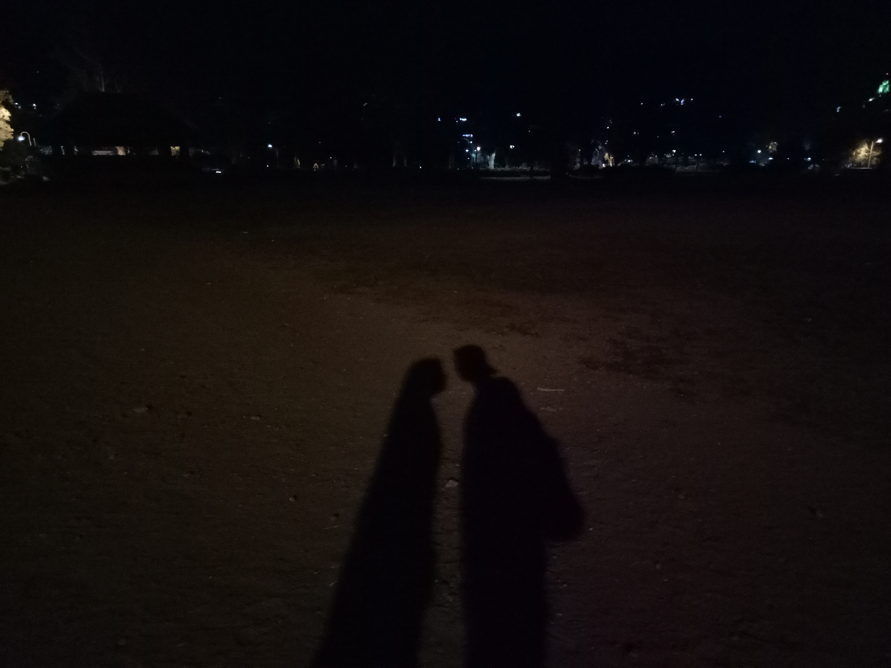
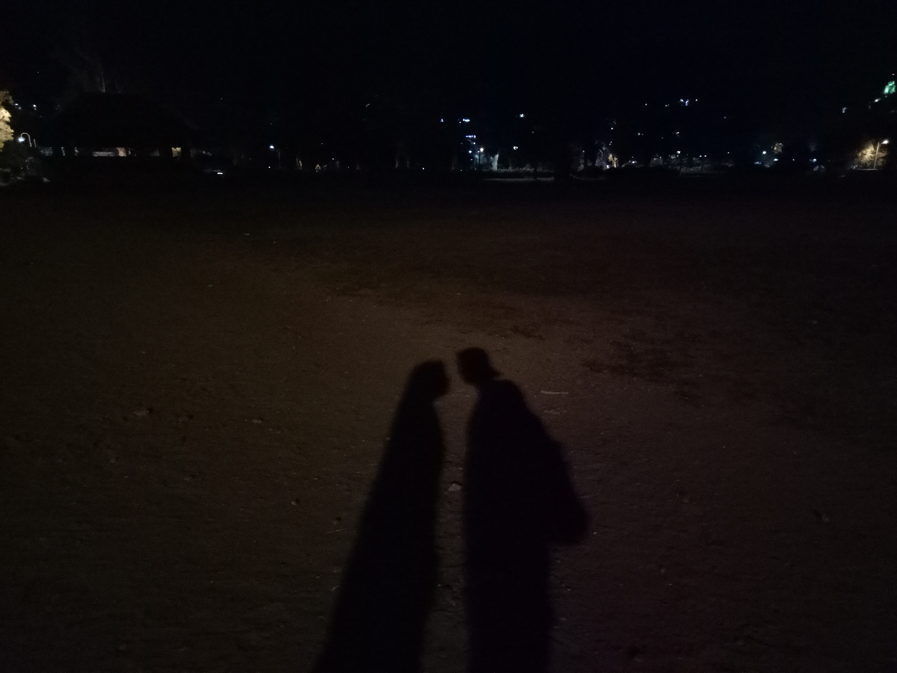

?
?
Welcome to my Website
?


 


I am Justine Gail Valdez ,I'm from Philippines, I live in a city where pine tress are rooted for fresh soothing air to breath, it is the city of Baguio. I am a musician and a Lead Vocalist. The instrument that I play is Piano/Keyboard. I play badminton from time to time because it is my recreational activity. I work hard for what I want and learn things from what I need to gain in real life. I always love to reflect and meditate everything in life, because real world is my thing.
Plays the Piano
Vocalist and Choir
Plays Badminton